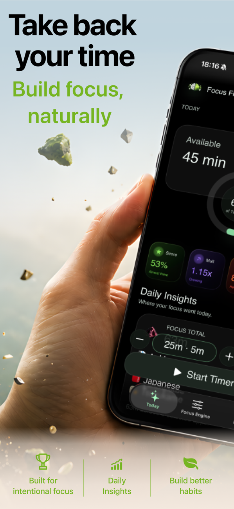

Quick answer: To focus on studying with your phone nearby, don't rely on willpower — restructure the phone: block your distracting apps behind a shield, make your study apps the only way to earn scroll time, and let a focus timer track the session. With FocusFirst, every studied minute earns you break time, so the phone becomes the scorekeeper instead of the opponent.
Why study sessions actually break
It's rarely a dramatic collapse. It's minute 23: the problem gets hard, your brain proposes a "quick check," and the check costs nothing — so it happens. Forty-five minutes later you're deep in a feed with the textbook still open. The killer isn't the phone's existence; it's that escaping the hard moment is free. Every effective study-focus method works by making that escape cost something.
The classic advice, and its limits
- Phone in another room: works, until you need Anki, a calculator, the lecture recording, or the group chat where the assignment details live. Modern studying is partly on the phone — that's exactly the trap.
- Airplane mode / Do Not Disturb: stops incoming distraction, does nothing about outgoing — nobody's notification makes you open TikTok at minute 23; you do.
- Pomodoro timers: excellent structure, zero enforcement. The tomato can't stop you from opening Instagram during a work block.
The upgrade: make studying literally pay
Here's the FocusFirst setup for students, start to finish:
- Block the leak apps. Instagram, TikTok, YouTube, Reddit — whatever eats your sessions — go behind the shield.
- Mark your study tools as focus apps. Anki, Notion, PDF readers, Duolingo, lecture apps. Time in them earns scroll time at your rate — during exam season many students run strict, 10 minutes studied per 2–3 earned.
- Run the focus timer for desk work that isn't in an app — problem sets on paper, textbook reading. The session still counts, still earns.
- Set a daily focus goal — say 90 minutes — with its completion bonus as your evening's guilt-free break, already earned.
Now replay minute 23: the problem gets hard, the thumb moves, the shield appears — "Spend 5m to unlock?" And here's the psychology that makes it work: you're 23 minutes into earning. Breaking now doesn't just cost 5 minutes of balance; it interrupts a streak your brain has started to value. Most of the time, you go back to the problem — not out of virtue, but because the math changed.
Exam season protocol
- Tighten the rate two weeks out; loosen it after finals. The dial existing is what makes strictness sustainable.
- Never block your tools — messages, email, maps stay free. Only the feeds pay.
- Watch weekly focused hours, not daily perfection. FocusFirst's Progress tab (focused time, active days, best day) is the only study tracker you'll actually check, because it's also your wallet.
- Take the earned breaks. Studied 50 minutes, earned 15, spend 10 on whatever you want — that's not cheating, that's the system functioning. Guilt-free breaks are why this method survives the semester and white-knuckle methods don't.

Try it: FocusFirst requires a subscription or one-time Lifetime purchase — block your distracting apps, set your earning rate, and start your first focus session today. Get FocusFirst for iPhone →